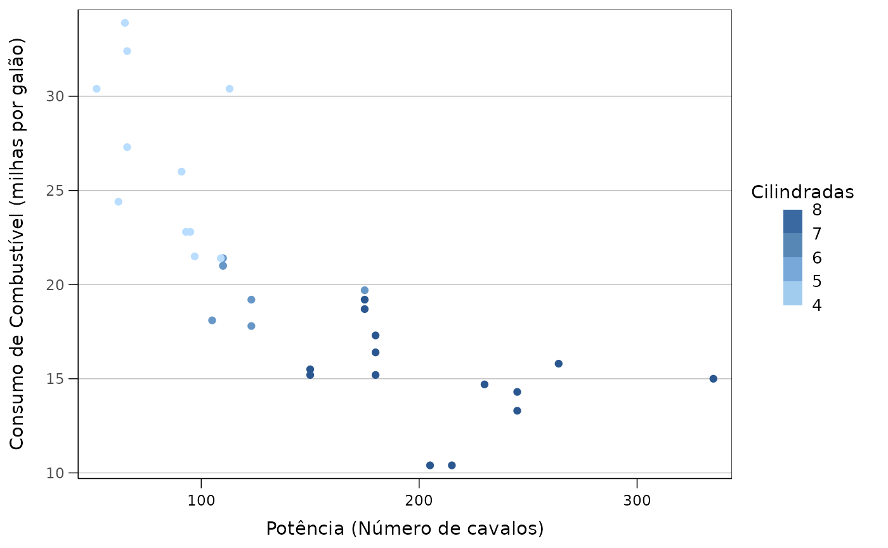
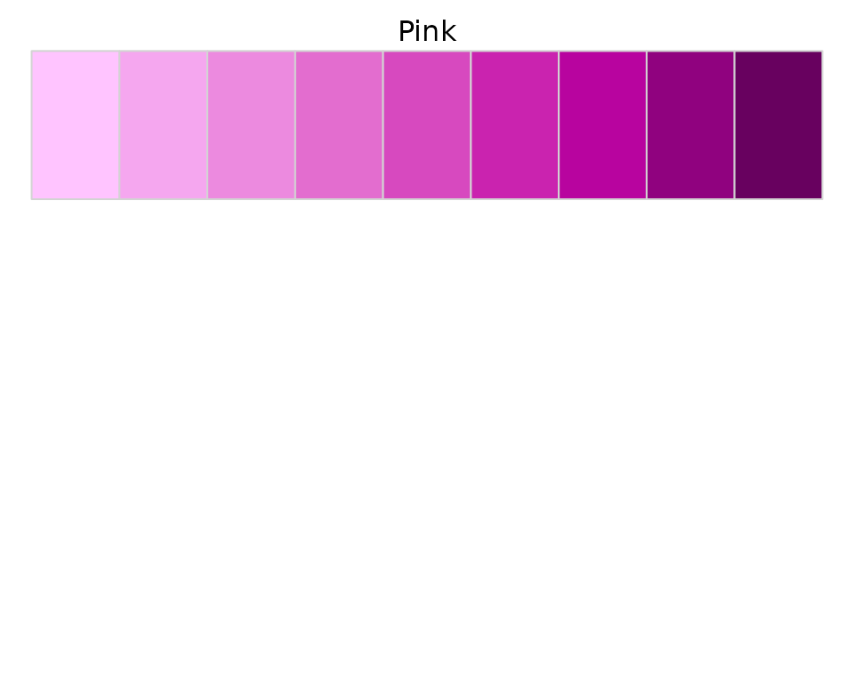
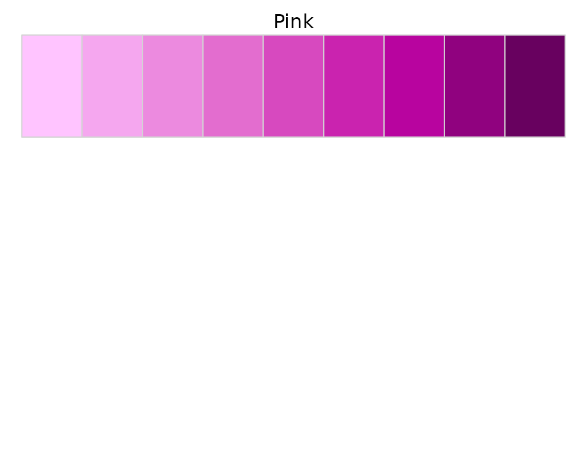
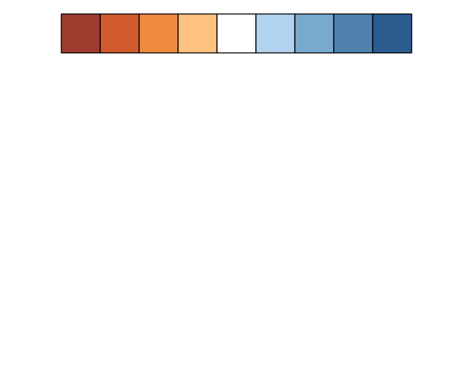
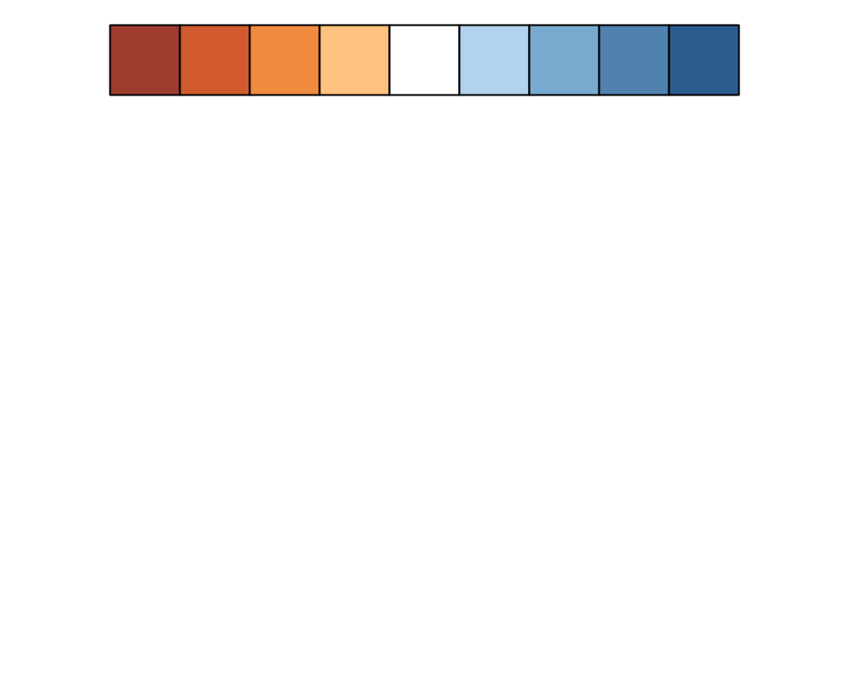
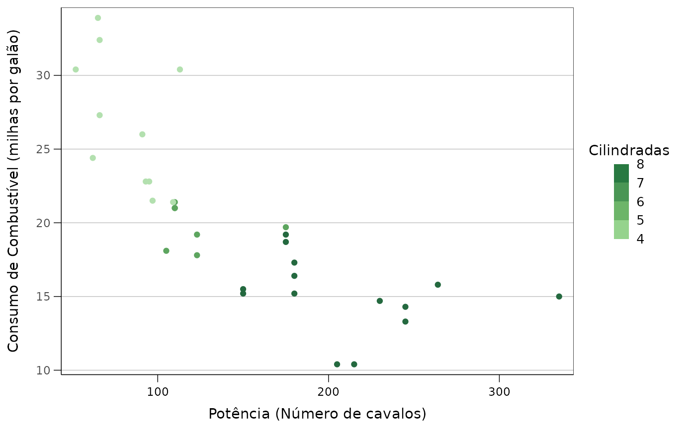
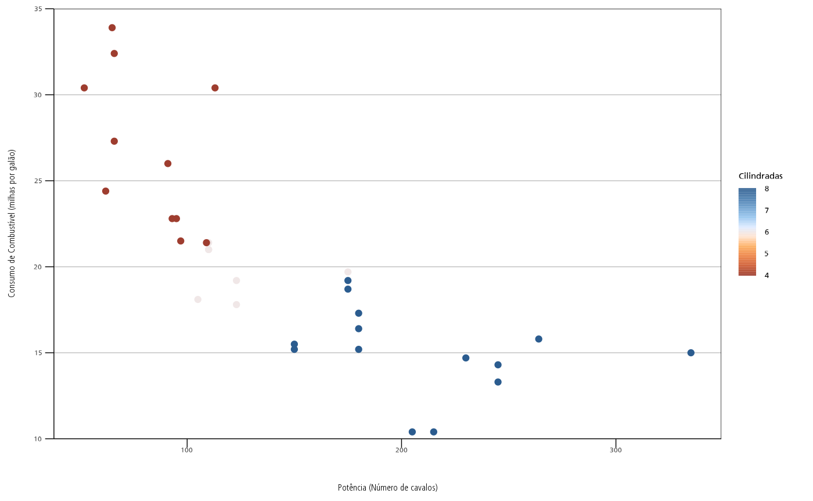
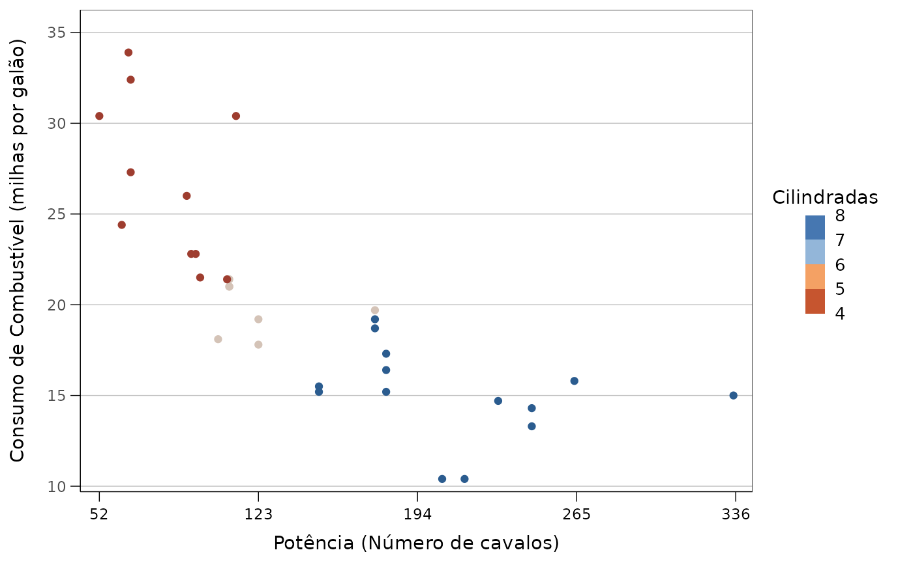
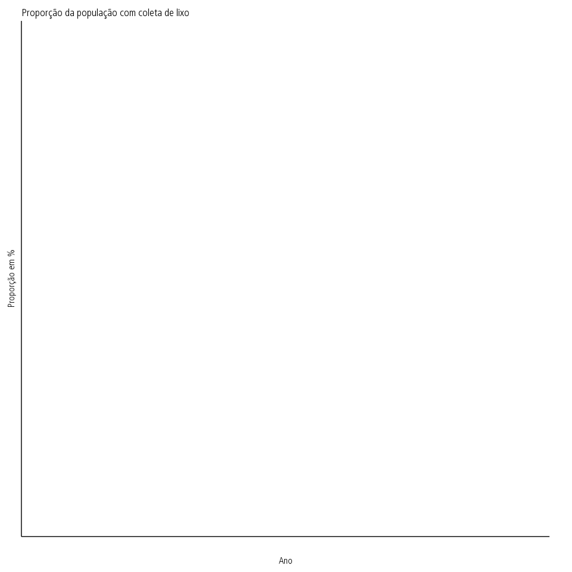

ipeaplot is a computational package designed to help researchers create charts and maps following the editorial guidelines used by the Institute for Applied Economic Research - Ipea. The package provides users with tools and functions that simplify the process of consistently using the color schemes and graphic styles used in Ipea’s Texto para Discussão (TD). By using ipeaplot, users can easily achieve visually appealing and professionally formatted studies. This vignette presents a quick intro to ipeaplot.
Installation
You can install the development version of ipeaplot from github:
# Development version
utils::remove.packages('ipeaplot')
devtools::install_github("ipeadata-lab/ipeaplot")Overview of the package
The ipeaplot package is meant be used together with
ggplot2, the most popular data visualization library in R.
Currently, ipeaplot includes four main functions to help you change the
style of your figures:
-
theme_ipea()- changes layout of figure elements (axis, title, subtitle, fonts etc) following Ipea’s editorial guidelines; -
scale_color_ipea()- selects a color palette from a range of options following Ipea’s editorial guidelines; -
scale_fill_ipea()- selects a color palette from a range of options following Ipea’s editorial guidelines; -
save_eps()- saves figures in.epsfile extesion to be used by Ipea’s editing team.
Demonstration on sample data
First, let’s load the libraries and sample data we’ll be using to
demonstrate ipeaplot in this vignette. In these first examples below,
we’ll be using the mtcats data set from R.
library(ipeaplot)
library(ggplot2)
library(dplyr)
library(abjData)
library(geobr)
# Load mtcars dataset
data(mtcats)Here is a general example of how a chart used in Ipea’s Discussion Papers look like. In the next sections of this vignette we’ll explore how to make changes to the plot while still abiding to Ipea’s editorial guidelines.
fig_base <- ggplot() +
geom_point(data = mtcars, aes(x = hp , y = mpg, color = cyl)) +
labs(y='Consumo de Combustível\n(milhas por galão)',
x ='Potência (Número de cavalos)',
color='Cilindradas') +
scale_color_ipea() +
theme_ipea()
fig_base
Paleta de cores
Existem duas funções básicas para seleciona a paleta de cores da
figura: scale_color_ipea() e
scale_fill_ipea(). O funcionamento de ambas funções seguem
a mesma lógica e parâmetros.
O parâmetro palette permite escolher uma paleta de cores
entre as opções de paletas utilizadas pelo editorial do Ipea. O padrão
da função é a paleta "Blue", mas o parâmetro pode receber
diversas outras opções. Isso incluir tanto paletas
c("Blue", "Green", "Orange", "Pink") como paletes de cores
divergentes c("Red-Blue", "Orange-Blue").
Cores sequenciais:
 

Cores divergentes:
 

# paleta sequencial verde
fig_base + scale_color_ipea(palette = "Green")
# paleta divergente de laranja a azul
fig_base + scale_color_ipea(palette = "Orange-Blue")
Por padrão, as funções scale_color_ipea() e
scale_fill_ipea() geram escalas de cores para variáveis
contínuas. Para utilizar uma escala de core para
variáveis discretas, basta passar o parâmetro
discrete = TRUE.
ggplot() +
geom_point(data = mtcars, aes(x = hp , y = mpg, color = factor(cyl))) +
labs(y='Consumo de Combustível\n(milhas por galão)',
x ='Potência (Número de cavalos)',
color='Cilindradas') +
scale_color_ipea(palette = "Orange", discrete = TRUE ) +
theme_ipea()
Além de selecionar a paleta de cores, as funções
scale_color_ipea() e scale_fill_ipea() trazem
ainda outros parâmetros que permitem escolher o separador de casa
decimal (ponto ou vírgula), ajustar o tamanho da legenda etc. A lista
completa de parâmetros está disponível na documentação da função
?scale_color_ipea().
Ajustando o theme das figuras
A função theme_ipea() aplica às figuras o padrão visual
de gráficos utilizados pelo editorial do Ipea nas publicações de Texto
para Discussão (TD). Ainda, a função traz uma maneira conveniente de
ajustar diversas características das figuras, como por exemplo os eixos,
posição da legenda, escalas dos eixos etc.
The next step is to combine the ipeaplot package with other data sets to create thematic graphs In this example, we will be using data from the (Atlas of Human Development (by Ipea/FJP and UNPD) to create a graphs showing the variation of Life Expectancy at birth across Brasil country.
Once you’ve downloaded the data, it is really simple to plot maps
using ggplot2.
# Load the 'consumo' dataset from the 'abjData' package
cons = abjData::consumo
cons$dec_date <- as.character(cons$dec_date)
# Create a simple scatter plot with 'dec_date' on the x-axis, 'tempo' on the y-axis, color-coded by 'assunto', and grouped by 'assunto'
ggplot(data = cons, aes(x = dec_date, y = tempo, color = assunto, group = assunto)) +
# Use the 'geom_point()' function to add points to the plot
geom_point() +
# Set the x-axis label using 'xlab()'
xlab('Ano') +
# Set the y-axis label using 'ylab()'
ylab('Tempo') +
# Set the plot title and subtitle using 'ggtitle()'
ggtitle(label = "Tempo", subtitle = "Brasil (%)") +
# Set the color legend label using 'labs()'
labs(color = "Assunto") +
# Apply the IPEA theme using 'theme_ipea()'
theme_ipea(legend.position = "right") +
# Use the 'scale_color_ipea(discrete = T)' function to apply the IPEA discrete color scale
scale_color_ipea(discrete = T)
# Create a simple scatter plot with 'dec_date' on the x-axis, 'tempo' on the y-axis, color-coded by 'assunto', and grouped by 'assunto'
ggplot(data = cons, aes(x = dec_date, y = tempo, color = assunto, group = assunto)) +
# Use the 'geom_point()' function to add points to the plot
geom_point() +
# Set the x-axis label using 'xlab()'
xlab('Ano') +
# Set the y-axis label using 'ylab()'
ylab('Tempo') +
# Set the plot title and subtitle using 'ggtitle()'
ggtitle(label = "Tempo", subtitle = "Brasil (%)") +
# Apply the IPEA theme using 'theme_ipea()'
# Hide the legend using 'legend.position = "none"'
theme_ipea(legend.position = "none") +
# Use the 'scale_color_ipea(discrete = T)' function to apply the IPEA discrete color scale
scale_color_ipea(discrete = T)
# Calculate the mean values of 'espvida' and 'rdpc' grouped by 'ano' using the 'pnud_muni' dataset
graph <- abjData::pnud_muni %>%
group_by(ano) %>%
dplyr::summarise(espvida = mean(espvida),
rdpc = mean(rdpc))
# Create a line plot with 'ano' on the x-axis, 'espvida' on the y-axis, color-coded by 'espvida', and grouped by a single group
ggplot(data = graph, aes(x = as.character(ano), y = espvida, color = espvida, group = 1)) +
# Add a line to the plot using 'geom_line()'
geom_line() +
# Add points to the plot using 'geom_point()'
geom_point() +
# Set the x-axis label using 'xlab()'
xlab('Ano') +
# Set the y-axis label using 'ylab()'
ylab('Expectativa de vida') +
# Add a custom text label for 'espvida' using 'insert_text()'
#insert_text(label = "espvida", decimals = 0) +
# Apply a custom format to the y-axis labels using 'scale_y_continuous()'
scale_y_continuous(labels = scales::label_comma(decimal.mark = ",", big.mark = ".")) +
# Set the plot title and subtitle using 'ggtitle()'
ggtitle(label = "Expectativa de vida", subtitle = "Brasil (%)") +
# Apply the IPEA continuous color scale using 'scale_color_ipea()'
scale_color_ipea() +
# Apply the IPEA theme using 'theme_ipea()'
theme_ipea(legend.position = "none")
# Calculate the mean values of 'espvida' and 'rdpc' grouped by 'ano' using the 'pnud_muni' dataset
graph <- abjData::pnud_muni %>%
group_by(ano) %>%
dplyr::summarise(espvida = mean(espvida),
rdpc = mean(rdpc))
# Create a bar plot with 'ano' on the x-axis, 'espvida' on the y-axis, and color-filled by 'espvida'
ggplot(data = graph, aes(x = as.character(ano), y = espvida, fill = espvida)) +
# Add bars to the plot using 'geom_bar(stat = "identity")'
geom_bar(stat = "identity") +
# Set the x-axis label using 'xlab()'
xlab('Ano') +
# Set the y-axis label using 'ylab()'
ylab('Expectativa de vida') +
# Add a custom text label for 'espvida' using 'insert_text()'
# insert_text(label = "espvida", decimals = 0) +
# Apply a custom format to the y-axis labels using 'scale_y_continuous()'
scale_y_continuous(labels = scales::label_comma(decimal.mark = ",", big.mark = ".")) +
# Set the plot title and subtitle using 'ggtitle()'
ggtitle(label = "Expectativa de vida", subtitle = "Brasil (%)") +
# Apply the IPEA theme using 'theme_ipea()'
theme_ipea() +
# Apply the IPEA continuous color scale to the fill using 'scale_fill_ipea()'
scale_fill_ipea()
# Calculate the mean values of 'espvida' and 'rdpc' grouped by 'regn' and 'ano' using the 'pnud_muni' dataset
graph <- abjData::pnud_muni %>%
mutate(regn = substr(uf, 1, 1), # Extract the first character of 'uf' and assign it to 'regn'
regn = case_when(regn == "1" ~ "Norte", # Assign region names based on 'regn' values
regn == "2" ~ "Nordeste",
regn == "3" ~ "Sudeste",
regn == "4" ~ "Sul",
regn == "5" ~ "Centro Oeste",
TRUE ~ regn)) %>%
group_by(regn, ano) %>%
dplyr::summarise(espvida = mean(espvida), # Calculate the mean of 'espvida' within each 'regn' and 'ano'
rdpc = mean(rdpc)) # Calculate the mean of 'rdpc' within each 'regn' and 'ano'
# Option for facet title color
ggplot(data = graph, aes(x = as.character(ano), y = espvida, fill = espvida)) +
# Create a bar plot with 'ano' on x-axis, 'espvida' on y-axis, and 'espvida' for fill
geom_bar(stat = "identity") +
# Set the x-axis label
xlab('Ano') +
# Set the y-axis label
ylab('Expectativa de vida') +
# Add value labels to the plot
# insert_text(label = "espvida", decimals = 0) +
# Create separate panels for each 'regn'
facet_wrap(. ~ regn) +
# Set the plot title and subtitle
ggtitle(label = "Expectativa de vida", subtitle = "Brasil (%)") +
# Apply the default IPEA theme
theme_ipea() +
# Apply the IPEA continuous fill color scale
scale_fill_ipea() +
# Set the y-axis limits
coord_cartesian(ylim = c(min(graph$espvida), max(graph$espvida) + 10)) 
Thematic maps
The next step is to combine the ipeaplot package with other data sets to create thematic maps. In this example, we will be using data from the (Atlas of Human Development (by Ipea/FJP and UNPD) to create a choropleth map using geobr package showing the spatial variation of Average years of study across Brazilian municipalities.
Merge external data
First, we need a data.frame with estimates of Life
Expectancy and merge it to our spatial database. The seven-digit of
municipality code is our key column to join these two databases.
# Load municipality and state spatial data
mun = read_municipality()
uf = read_state()
# Subset and select specific columns from the 'pnud_muni' dataset
pnud = abjData::pnud_muni %>%
# Susbet data
subset(ano == 2010) %>%
# Select columns
select(ano, code_muni = codmun7, e_anosestudo, rdpc)
# Perform a left join between the 'mun' and 'pnud' data frames
df = left_join(mun, pnud)Plot thematic map
# Create a ggplot object 'graf2' using the 'df' dataset, mapping the 'e_anosestudo' variable to the fill aesthetic
fig2 <- ggplot(data = df, aes(fill = e_anosestudo)) +
geom_sf(color = NA) +
geom_sf(data = uf, color = "black", fill = NA) +
ggtitle("Média de anos de estudo") +
xlab("") + ylab("") +
scale_fill_ipea(name='Anos de\nestudo')
# theme_ipea()
fig2 ## Salvando figura
## Salvando figura
Finalmente, o pacote ipeaplot traz a função
save_eps() para facilitar a exportação da figura para um
arquivo em formato .eps, um formato de imagem vetorial de
alta resolução.
Basta passar o objeto ggplot da figura que deseja salvar, o nome do
arquivo file.name e as dimensões da figura
width e height em centímetros:
save_eps(fig2,
file.name = "figura_2.eps",
width = 15,
height = 15)